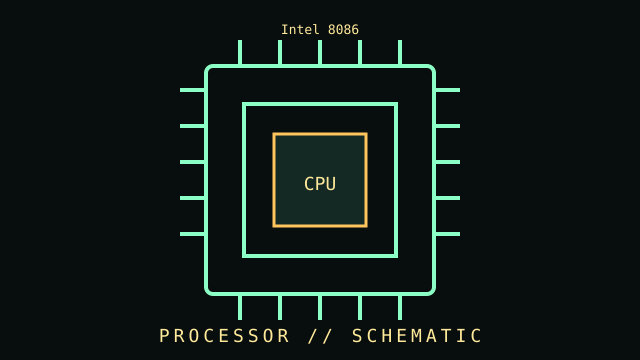

[ EARLY X86 PROCESSORS // IDENTIFIED COMPONENT ]
Intel 8086
Intel 16-bit x86 processor, 1978. This entry records a distinct product or well-defined family; differences among revisions and similarly named models are called out below.

MODEL IDENTIFICATION: Match the full model/part number, revision, and region to the item label and its manufacturer documentation. Where a family has multiple revisions, specifications below are not universal across the family.
Recorded specifications
| Cataloged part | Intel 8086 |
|---|---|
| Era / family | Intel 16-bit x86 processor, 1978 |
| Key specifications | 16-bit external data bus and registers; 20-bit address bus; 5–10 MHz original variants; 40-pin DIP package. |
| Interface / fit | Requires an 8086-compatible bus, clock, and support logic; not pin-compatible with 8088 despite shared ISA lineage. |
| Variants / identification | The 8086 has a 16-bit external bus; the 8088 uses an 8-bit external bus. |
| Archive record | Record full part number, hardware revision, serial/date code, firmware/BIOS, accessories, physical condition, and the documentation revision used for verification. |
Compatibility and handling
- Confirm the complete part number, connector signal/pinout, supported host, dimensions, power, firmware and operating-system requirements before use.
- Inspect for corrosion, cracked parts, bent pins, damaged insulation, failing bearings, leaking cells, or prior repair. Avoid powering unidentified or damaged hardware.
- For compatibility claims, cite a specific manual, CPU support list, interface standard, or tested host configuration; physical fit alone is insufficient.
- Record measurements with the test setup and instrument conditions; distinguish vendor maximums from measured or sustained results.
Model notes
Requires an 8086-compatible bus, clock, and support logic; not pin-compatible with 8088 despite shared ISA lineage.
The 8086 has a 16-bit external bus; the 8088 uses an 8-bit external bus.
Sources & further reading
- Manufacturer / standards documentation — Intel 8086Reference supplied for this specific model or standards family; verify full revision against the nameplate/manual.
- Manufacturer / standards documentation — Intel 8086Reference supplied for this specific model or standards family; verify full revision against the nameplate/manual.
Source links may describe a product family, not the exact board revision or region. The full model-specific manual/specification takes precedence.